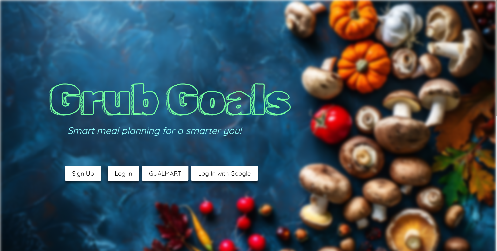
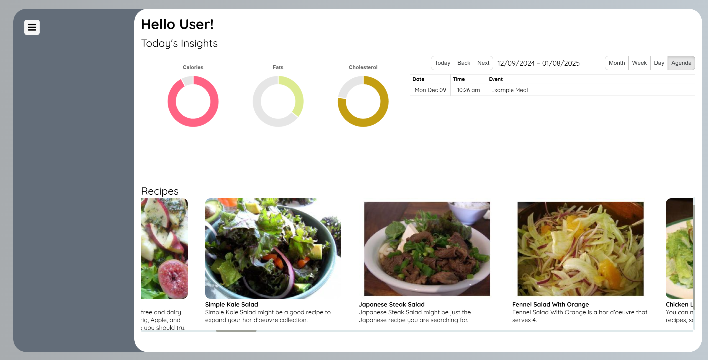
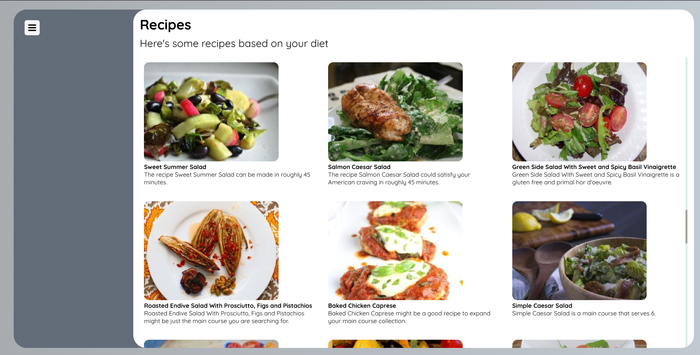
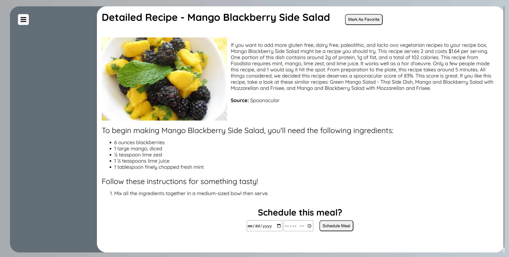
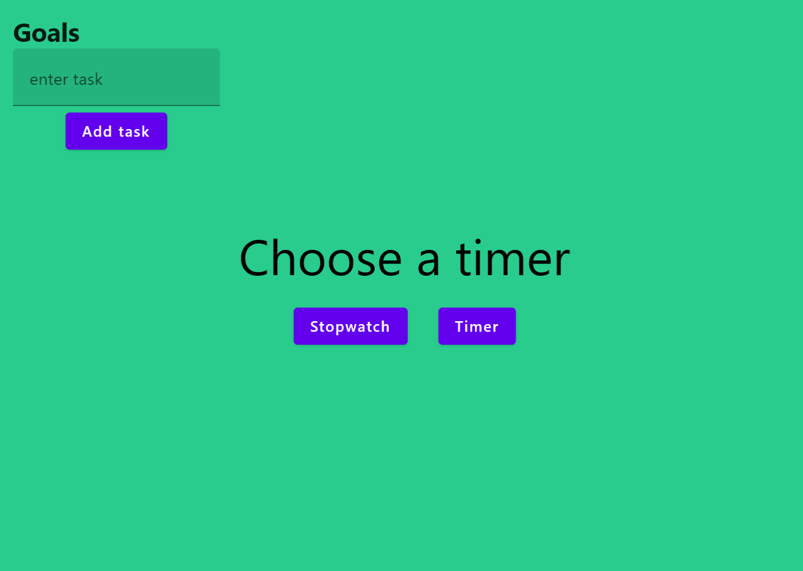
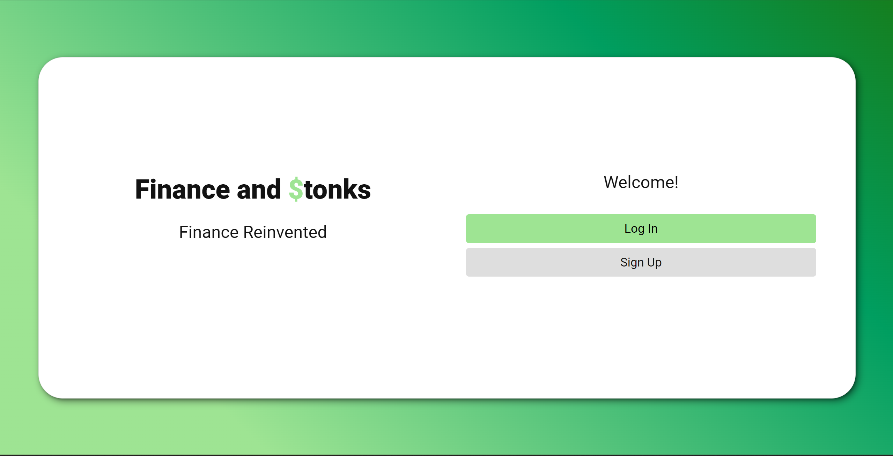
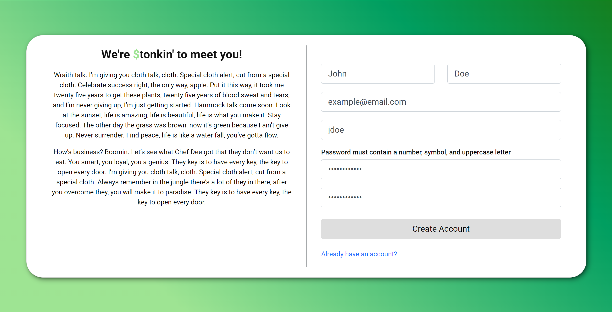

Throughout the years, I've worked on several projects. Listed are some of my highlights:
Grub Goals
is a web application built using React + Vite, MongoDB/Mongoose, Axios, Chart.js, and React-big-calendar. Grub Goals' goal is simple: to simplify meal planning. The application utilizes the Spoonacular API
to provide users different recipes that align with their diets. Collaborating with a team of 4, I focused on
front-end development, data visualization, and data retrieval.




Pomo
is a simple, barebones, and minimalistic productivity desktop application which helped
the user with tasks using the Pomodoro method. The application allowed the user to list goals,
create timers, or use a stopwatch if needed. Built using Kotlin. For more information
such as motivation, studies, and user studies, see
this powerpoint.

Finance & Stonks
is a demo financial tracking application built using Node.js, Axios, Plaid API, HTML, Bootstrap/CSS,
MongoDB/Mongoose, and Chart.js. I collaborated with a team of 5 and focused on mostly on front-end development. I also focused
on creating and managing user routes, user validation, and data visualization using Chart.js.


Connect4 - a simple Connect4 game. Code can be found
here.
TaskMaster
was a productivity application that was made purely with Java and JavaFX. It allowed the user create to-do lists
and reminders through a simple GUI. I lead a group of 4 whilst utilizing agile methodology. More information can be found
through the project's website or
github repo.
Database Management Systems Project: This is a working CLI created with Java and JDBC that allowed users to be able
to interact with a MySQL database. Users would be able to update, add, or remove entries in the
exisiting database.